Dataflow architecture for machine learning systems
Pasteur Labs, 13.10.2023
Two projects
Amazon Supply Chain Optimization Technologies (SCOT)
Project 1: confirmation rate prediction
Project 1: confirmation rate prediction
Why did it fail?
- Wrong data
- How to measure utility?
Project 2: fulfil to promise
Project 2: fulfil to promise
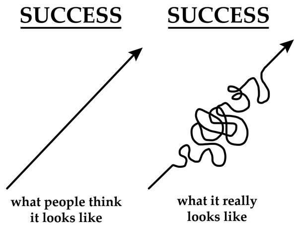What were the challenges?
- Dataset collection
- Infrastructure
Scaling Big Data Mining Infrastructure: The Twitter Experience J Lin, D Ryaboy; ACM SIGKDD Explorations Newsletter, 2013
“Effective big data mining at scale doesn't begin or end with what academics would consider data mining”
“Data scientists expend a large amount of effort to understand the data available to them, before they even begin any meaningful analysis”
“Exploratory data analysis always reveals data quality issues”
What's to blame?
... software services
What is a service
A service is a piece of software,that provides a function, or many functions,
known as interface or API,
that clients* can reuse,
together with policies to control its usage.
*A client can be anything: another software, a person, a hardware.
https://en.wikipedia.org/wiki/Service_(systems_architecture)
Service oriented architecture is
- Scalable
- Flexible
- Modular
- Reliable
- Encourages ownership
However...
Two services
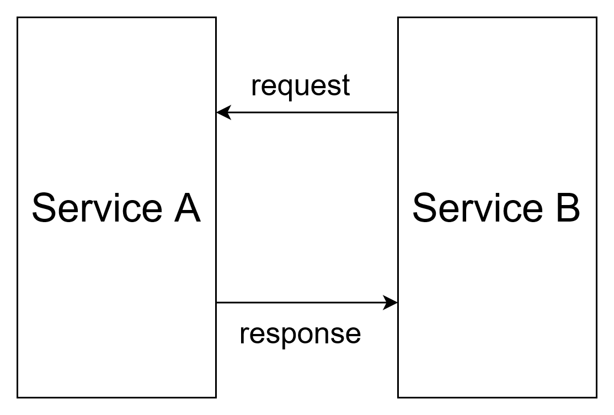Three services
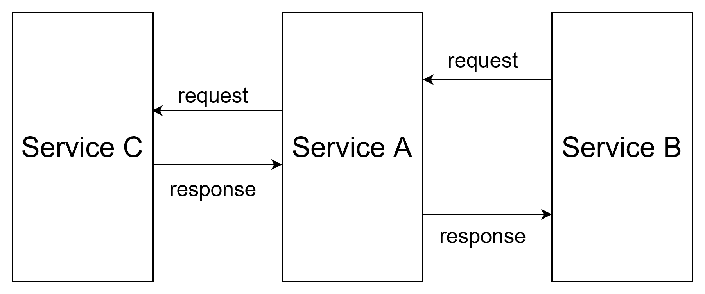Big ball of mud

Scaling Big Data Mining Infrastructure: The Twitter Experience J Lin, D Ryaboy; ACM SIGKDD Explorations Newsletter, 2013
“Twitter is powered by many loosely-coordinated services.”
“Since a single user action may involve many services, a data scientist wishing to analyze user behavior must first identify all the disparate data sources involved.”
“Services are normally developed and operated by different teams, which may adopt different conventions for storing and organizing log data.”
What to do?
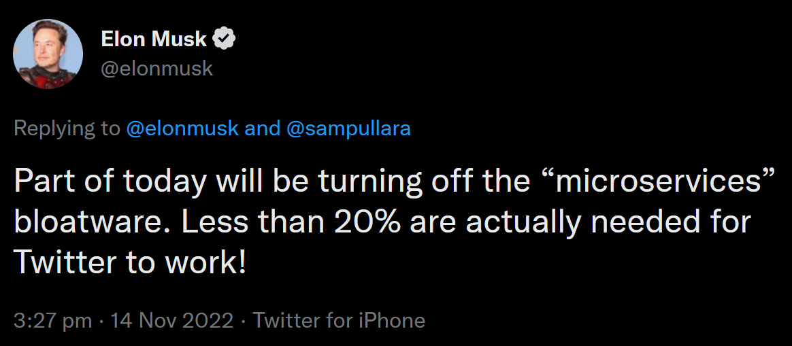What else to do?
What else else to do?
Build software with data as the first priority!
How?
- Prioritise data while designing services - Götz et al., 2018
- Split data storage to encourage ownership - Data Meshes, Dehghani, 2019
- Cluster services by data domains - Domain-Oriented Microservice Architecture, Uber, 2020
Or... roll on dataflow!
What is dataflow architecture?

"Data flow schemas", Dennis et al., International Symposium on Theoretical Programming, 1974
Boring slide
Control flow: instructions are executed one after another, classic von Neumann architecture.
Dataflow: instruction is ready to execute as soon as all its inputs are available.
Intuition behind the boring slide
Control flow is about operations and their order
Dataflow is about data routes and transformations
Examples of dataflow in action
- Flow-based programming
- MapReduce
- Data streaming
You are likely familiar with dataflow already!

Features of dataflow architecture
- Separates data and logic
- Data as a first class citizen
- Complete dataflow graph
- Decentralised
Benefits of dataflow architecture for (AI) systems
Benefit 1: data discovery and collection
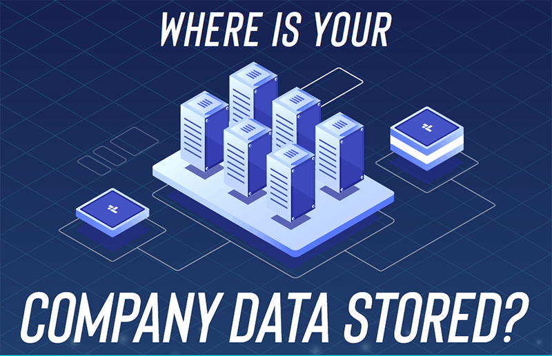"Towards better data discovery and collection with flow-based programming", Paleyes et al., DCAI Workshop, NeurIPS 2021
Benefit 2: deployment of ML
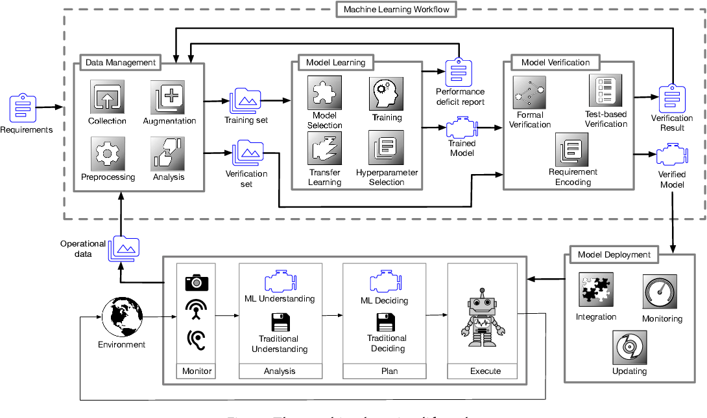
"An empirical evaluation of flow based programming in the machine learning deployment context", Paleyes et al., CAIN 2022
"Assuring the machine learning lifecycle: Desiderata, methods, and challenges", Ashmore et al., ACM Computing Surveys, 2021
Benefit 3: data governance
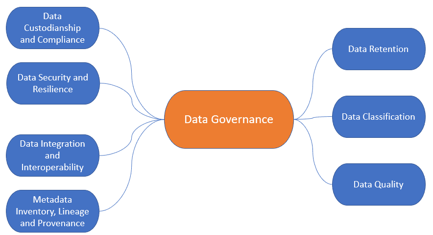
"Decision provenance: Harnessing data flow for accountable systems", Singh et al., IEEE Access, 2018
"Desiderata for next generation of ML model serving", Akoush et al., DMML Workshop, NeurIPS 2022
"A Primer on Provenance: Better understanding of data requires tracking its history and context.", Carata et al., ACM Queue, 2014
Seldon Core v2
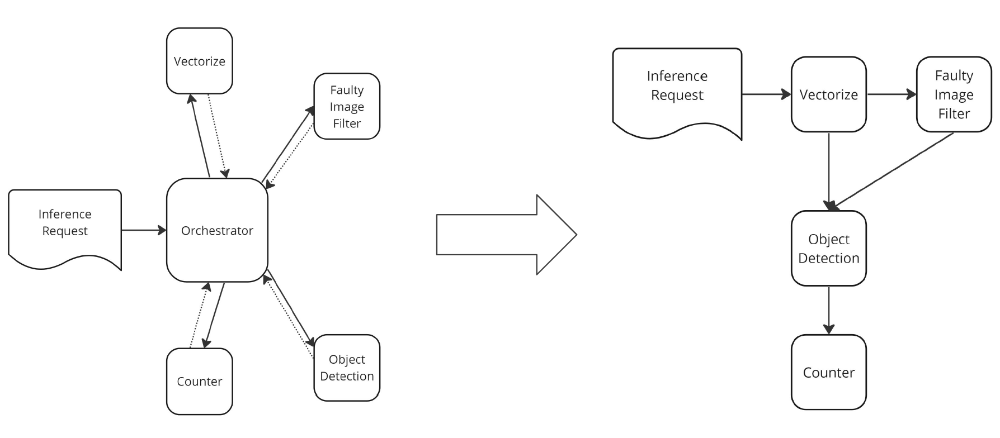"Dataflow for machine learning operations", Paleyes and Rakowski, Kafka Summit 2023
Seldon Core v2
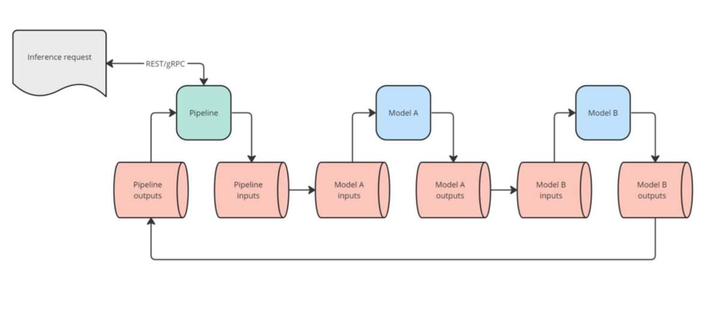"Dataflow for machine learning operations", Paleyes and Rakowski, Kafka Summit 2023
This is a causal graph!
- Arrows show causal relationships
- Complete by design
- No post-hoc discovery
- No expert knowledge
- Interventions:
- Software updates
- Bugs
- Input data shifts
"Dataflow graphs as complete causal graphs", Paleyes et al., CAIN 2023
Benefit 4: causal fault localisation
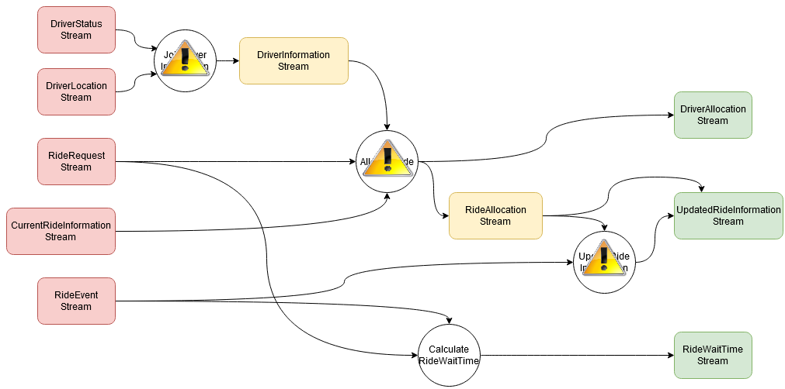"Causal fault localisation in dataflow systems", Paleyes et al., EuroMLSys 2023
Benefit 4: causal fault localisation
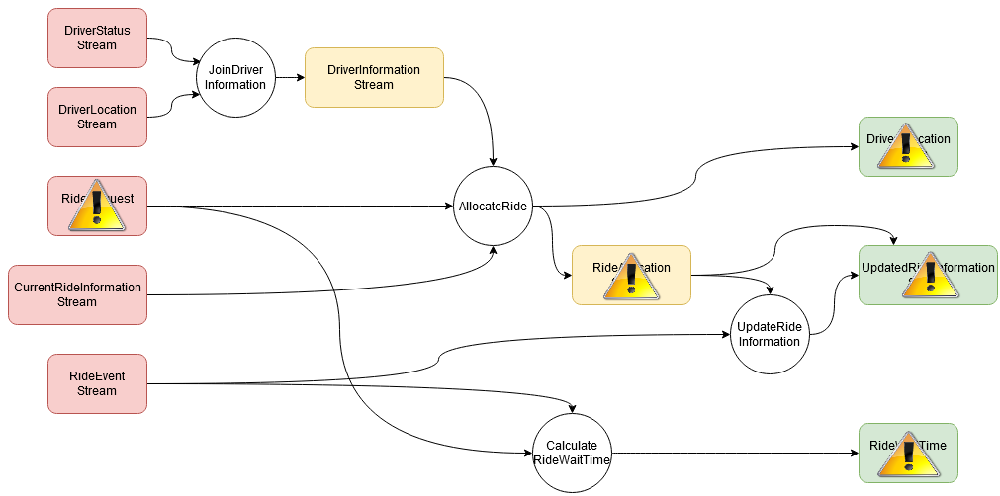"Causal fault localisation in dataflow systems", Paleyes et al., EuroMLSys 2023
Benefit 5: causal experimentation

Intellectual debt
"Intellectual Debt: With Great Power Comes Great Ignorance", Zittrain J, Medium: Berkman Klein Center Collection, 2019
So how do we build explainable (AI) systems?
- Explicit dataflows
- Data as a first priority
- Causal reasoning
But also
- Statistical emulation of systems
- End-to-end system optimisation
- Self-adaptive and continual learning systems
- System FITness
- Security and privacy
"Real-world Machine Learning Systems: A survey from a Data-Oriented Architecture Perspective", Cabrera et al., 2023
"Machine learning from innovation to deployment: A strategic research agenda for AutoAI", ML@CL, 2022